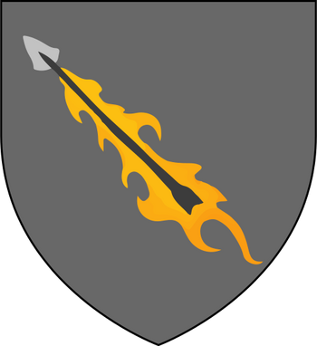

Noble Houses
houses explained
noble houses
The Seven Kingdoms of Westeros are divided between many hundreds of noble houses of various sizes. In Westeros ultimate power derives from the King on the Iron Throne and descends through the Great Houses that rule the constituent regions of the continent to their vassals.
There are nine Great Houses, and each of them have a number of vassal houses (sometimes also referred to as lesser houses) in their liege. The most powerful vassal houses may themselves field armies of a few thousand and control large regions, while the smallest houses may be little more than impoverished landholders with only a few men to their name. Members of the nobility are called "highborn", in contrast to lowborn commoners.
Some of the most powerful noble houses rival the smaller Great Houses in terms of wealth and the size of the armies they can field, e.g. House Hightower rules Oldtown, the second largest city in Westeros, and possesses large armies and fleets of its own. Other noble houses, while technically holding this rank, are relatively poor.
A typical noble house is seated at a castle and controls the land around it, collecting tithes and taxes from farmers, lesser landholders and smallfolk. In times of war, they are expected to recruit and maintain a number of soldiers for their lieges. In most of Westeros, only men can become ruling lords, and women can only rule if the rest of the male line has been extinguished or if they are acting as regents for their sons until they have reached the age of maturity.
great houses
The Great Houses are the most powerful of the noble houses of the Seven Kingdoms. They exercise immense authority and power over their vassals and territories and are answerable only to the King of the Andals, the Rhoynar, and the First Men, with the exception of House Stark, which rules over an independent kingdom.
Before the Targaryen Conquest, each of the Seven Kingdoms was ruled independently by a powerful royal family. During the Conquest these families were either destroyed, replaced, or defeated and made to swear allegiance to King Aegon, who reigned from the Iron Throne in King's Landing.
The Gardeners, Hoares, and Durrandons were slain and replaced by the Tyrells, Greyjoys, and Baratheons respectively, while the Lannisters, Arryns, and Starks surrendered peacefully and were allowed to remain in control of their lands. In addition, Aegon raised up the Tullys to rule over the Riverlands, which had been under ironborn occupation prior to his arrival. Only House Martell of Dorne resisted his armies, but was later brought into the fold through a peaceful marriage-alliance some two centuries later.
Robert's Rebellion ended in the exile of the last Targaryens, with House Baratheon replacing them on the Iron Throne, forming the royal cadet branch House Baratheon of King's Landing.
The War of the Five Kings, along with Daenerys Targaryen's war for Westeros, has seen changes amongst the Great Houses. House Baratheon is no longer the royal house, and two of it's branches have become extinct, House Tyrell is also extinct, and has been succeeded by Bronn's unnamed house. The Riverlands and the titles of House Tully, which is also near extinction, defeated in the war and exiled, have been given to its usurping former vassals House Frey, though the other Tully vassals remain opposed to the Freys, whose male line has, meanwhile, been effectively wiped out, allowing the Tullys to reclaim their position. With the coronation of Queen Cersei Lannister, the Crownlands was held by House Lannister, the new royal house after the legal extinction of the Baratheons (though after the legitimization of Gendry Baratheon by Queen Daenerys Targaryen, House Baratheon has been restored). Although scattered early in the war and stripped of lands and titles, House Stark has regained control of the North through the defeat of its usurping vassals House Bolton, and later gained independence. After the battle of King's Landing, the Lannisters' brief reign as Royal House ended, and once again, they only rule the Westerlands. However, the Lannisters face an uncertain future, with all but one of them dead, and their gold mines depleted.
vassal houses
Each Great House has a large number of vassal houses serving it, most of whom in turn have smaller vassals under them, extending all the way down to farmers and landed knights. Each Great House rules over its territory and is responsible for collecting taxes and, in times of war, raising troops to fight for the king. Otherwise they are largely left to operate autonomously to simplify the bureaucracy and governance of the realm.
house Bronn

Bronn's house of Highgarden is a newly formed Great House of Westeros. It rules over the Reach, a vast, fertile, and heavily-populated region of southwestern Westeros, from their castle-seat of Highgarden as Lords Paramount of the Reach after taking control of the region from House Tyrell, following their extinction as a result of the destruction of the Great Sept of Baelor and the Sack of Highgarden.
The house was founded by Ser Bronn of the Blackwater and raised to power as fulfillment of a debt owed by Tyrion of House Lannister, the Hand of the King to the first elected king, Bran I the Broken. The sigil of the house is a flaming arrow, symbolizing Bronn's role during the Battle of the Blackwater. The official name and words of the house are unknown.
Vassal houses
house Arryn
 House Arryn of the Eyrie is one of the Great Houses of Westeros. It has ruled over the Vale of Arryn for millennia, originally as the Kings of Mountain and Vale and more recently as Defenders of the Vale and Wardens of the East under the Targaryen, Baratheon, and Lannister dynasties. The nominal head of House Arryn is Robin Arryn, the Lord of the Eyrie, with Yohn Royce holding actual power over the house.
Their lands are in the central-eastern region of the continent. Their seat is the Eyrie, a castle on a shoulder of the Giant's Lance. House Arryn's sigil is a white crescent moon and falcon on a blue field. Their house words are "As High as Honor.
House Arryn of the Eyrie is one of the Great Houses of Westeros. It has ruled over the Vale of Arryn for millennia, originally as the Kings of Mountain and Vale and more recently as Defenders of the Vale and Wardens of the East under the Targaryen, Baratheon, and Lannister dynasties. The nominal head of House Arryn is Robin Arryn, the Lord of the Eyrie, with Yohn Royce holding actual power over the house.
Their lands are in the central-eastern region of the continent. Their seat is the Eyrie, a castle on a shoulder of the Giant's Lance. House Arryn's sigil is a white crescent moon and falcon on a blue field. Their house words are "As High as Honor.
Vassal houses
house Baratheon
 House Baratheon of Storm's End is a Great House of Westeros that traditionally rules the Stormlands on the eastern coast of Westeros, aptly named for its frequent storms, from their seat of Storm's End.
House Baratheon became the royal house of the Seven Kingdoms (as House Baratheon of King's Landing) after Robert Baratheon led a rebellion against the Targaryen dynasty. At the end of the rebellion, Robert ascended the Iron Throne as Robert I and married Cersei Lannister after the death of Lyanna Stark.
House Baratheon became officially extinct after the deaths of Stannis Baratheon and his family, but was revived when Robert's last known bastard was legitimized by Queen Daenerys Targaryen as Gendry Baratheon.
House Baratheon's sigil is a crowned black stag on a gold field and their house words are "Ours is the Fury."
House Baratheon of Storm's End is a Great House of Westeros that traditionally rules the Stormlands on the eastern coast of Westeros, aptly named for its frequent storms, from their seat of Storm's End.
House Baratheon became the royal house of the Seven Kingdoms (as House Baratheon of King's Landing) after Robert Baratheon led a rebellion against the Targaryen dynasty. At the end of the rebellion, Robert ascended the Iron Throne as Robert I and married Cersei Lannister after the death of Lyanna Stark.
House Baratheon became officially extinct after the deaths of Stannis Baratheon and his family, but was revived when Robert's last known bastard was legitimized by Queen Daenerys Targaryen as Gendry Baratheon.
House Baratheon's sigil is a crowned black stag on a gold field and their house words are "Ours is the Fury."
Vassal houses
House Greyjoy
 House Greyjoy of Pyke is one of the Great Houses of Westeros. It rules over the Iron Islands, a harsh and bleak collection of islands off the west coast of Westeros, from the castle at Pyke. The head of the house is the Lord Reaper of Pyke.
House Greyjoy's sigil is traditionally a golden kraken on a black field. Their house words are "We Do Not Sow, although the phrase "What Is Dead May Never Die" is also closely associated with House Greyjoy and their bannermen, as they are associated with the faith of the Drowned God.
Following the extinction of House Hoare, the ironborn elected House Greyjoy as Lord of the Iron Islands, an administrative region of the Seven Kingdoms, as vassals to House Targaryen. During Robert's Rebellion, House Greyjoy declared for House Baratheon. During the Greyjoy Rebellion, Balon Greyjoy declared sovereignty as the Kingdom of the Iron Islands and seceded from the Seven Kingdoms, but the rebellion was put down. House Greyjoy bent the knee to Robert Baratheon, and the Kingdom of the Iron Islands became defunct.
House Greyjoy of Pyke is one of the Great Houses of Westeros. It rules over the Iron Islands, a harsh and bleak collection of islands off the west coast of Westeros, from the castle at Pyke. The head of the house is the Lord Reaper of Pyke.
House Greyjoy's sigil is traditionally a golden kraken on a black field. Their house words are "We Do Not Sow, although the phrase "What Is Dead May Never Die" is also closely associated with House Greyjoy and their bannermen, as they are associated with the faith of the Drowned God.
Following the extinction of House Hoare, the ironborn elected House Greyjoy as Lord of the Iron Islands, an administrative region of the Seven Kingdoms, as vassals to House Targaryen. During Robert's Rebellion, House Greyjoy declared for House Baratheon. During the Greyjoy Rebellion, Balon Greyjoy declared sovereignty as the Kingdom of the Iron Islands and seceded from the Seven Kingdoms, but the rebellion was put down. House Greyjoy bent the knee to Robert Baratheon, and the Kingdom of the Iron Islands became defunct.
Vassal houses
House Lannister
 House Lannister of Casterly Rock is one of the Great Houses of Westeros, one of its richest and most powerful families and one of its oldest dynasties. It was briefly the royal house of the Seven Kingdoms until their defeat in Daenerys Targaryen's war for Westeros.
The Lannisters rule over the Westerlands. Their seat is Casterly Rock, a massive rocky promontory overlooking the Sunset Sea which has had habitations and fortifications built into it over the millennia. They are the Lords Paramount of the Westerlands and Wardens of the West. As the new royal House, they also ruled directly over the Crownlands from their seat of the Red Keep in King's Landing, the traditional seat of the royal family. House Lannister's Heraldry consists of a golden lion on a crimson background, and their house words are "Hear me roar!", which are rarely mentioned. Their unofficial motto, which is as well known as the official one, is "A Lannister always pays his debts" - which is used much more often and mostly in negative context, though it can also be used in the original, literal sense.
House Lannister of Casterly Rock is one of the Great Houses of Westeros, one of its richest and most powerful families and one of its oldest dynasties. It was briefly the royal house of the Seven Kingdoms until their defeat in Daenerys Targaryen's war for Westeros.
The Lannisters rule over the Westerlands. Their seat is Casterly Rock, a massive rocky promontory overlooking the Sunset Sea which has had habitations and fortifications built into it over the millennia. They are the Lords Paramount of the Westerlands and Wardens of the West. As the new royal House, they also ruled directly over the Crownlands from their seat of the Red Keep in King's Landing, the traditional seat of the royal family. House Lannister's Heraldry consists of a golden lion on a crimson background, and their house words are "Hear me roar!", which are rarely mentioned. Their unofficial motto, which is as well known as the official one, is "A Lannister always pays his debts" - which is used much more often and mostly in negative context, though it can also be used in the original, literal sense.
Vassal houses
House Martell
 House Martell of Sunspear is one of the Great Houses of Westeros. It rules the peninsula of Dorne in the far south of the continent from their castle Sunspear. Though loyal to the Iron Throne, the Martells were never conquered by the Targaryens and have pursued a more isolated role in wider political events since Robert's Rebellion.
With the assassinations of Prince Doran Martell and his only heir, Prince Trystane, by Ellaria Sand and the three eldest Sand Snakes, the Sand Snakes carry the Martell blood through their father Oberyn Martell. The Sand Snakes also continue to use the Martell sigil to represent themselves and Dorne.
Under the leadership of Ellaria Sand, the forces of House Martell and Dorne were aligned with Daenerys Targaryen against House Lannister.
House Martell's sigil is a red sun pierced by a golden spear, on an orange field, a combination of the original Martell sigil - a yellow spear - and the emblem of Princess Nymeria - a red sun - to symbolize the marriage of the warrior-queen to Mors Martell. Their house words are "Unbowed, Unbent, Unbroken."
House Martell of Sunspear is one of the Great Houses of Westeros. It rules the peninsula of Dorne in the far south of the continent from their castle Sunspear. Though loyal to the Iron Throne, the Martells were never conquered by the Targaryens and have pursued a more isolated role in wider political events since Robert's Rebellion.
With the assassinations of Prince Doran Martell and his only heir, Prince Trystane, by Ellaria Sand and the three eldest Sand Snakes, the Sand Snakes carry the Martell blood through their father Oberyn Martell. The Sand Snakes also continue to use the Martell sigil to represent themselves and Dorne.
Under the leadership of Ellaria Sand, the forces of House Martell and Dorne were aligned with Daenerys Targaryen against House Lannister.
House Martell's sigil is a red sun pierced by a golden spear, on an orange field, a combination of the original Martell sigil - a yellow spear - and the emblem of Princess Nymeria - a red sun - to symbolize the marriage of the warrior-queen to Mors Martell. Their house words are "Unbowed, Unbent, Unbroken."
Vassal houses
House stark
 House Stark of Winterfell is a Great House of Westeros and the royal house of the Kingdom of the North. They rule over the vast region known as the North from their seat in Winterfell. It is one of the oldest lines of Westerosi nobility by far, claiming a line of descent stretching back over eight thousand years. Before the Targaryen conquest, as well as during the War of the Five Kings and early on in Daenerys Targaryen's war for Westeros, the leaders of House Stark ruled over the region as the Kings in the North.
Their rule in the North seemingly ended after the events of the Red Wedding when House Frey and House Bolton betrayed House Stark after forming a secret alliance with House Lannister, during which Roose Bolton murdered King Robb Stark. Both the North and Winterfell were taken over by House Bolton. However, the Boltons' hold was jeopardized when Sansa Stark escaped their clutches after learning her brothers Bran and Rickon Stark were still alive and reunited with her half-brother, Jon Snow, at Castle Black.
House Stark of Winterfell is a Great House of Westeros and the royal house of the Kingdom of the North. They rule over the vast region known as the North from their seat in Winterfell. It is one of the oldest lines of Westerosi nobility by far, claiming a line of descent stretching back over eight thousand years. Before the Targaryen conquest, as well as during the War of the Five Kings and early on in Daenerys Targaryen's war for Westeros, the leaders of House Stark ruled over the region as the Kings in the North.
Their rule in the North seemingly ended after the events of the Red Wedding when House Frey and House Bolton betrayed House Stark after forming a secret alliance with House Lannister, during which Roose Bolton murdered King Robb Stark. Both the North and Winterfell were taken over by House Bolton. However, the Boltons' hold was jeopardized when Sansa Stark escaped their clutches after learning her brothers Bran and Rickon Stark were still alive and reunited with her half-brother, Jon Snow, at Castle Black.
Vassal houses
House Tully
 House Tully of Riverrun is a Great House of Westeros. Its most senior member carried the title of Lord of Riverrun and Lord Paramount of the Trident, until the Red Wedding. The current head is Lord Edmure Tully, son of the late Hoster Tully. The Tully sigil is a silver trout on a red and blue background. Their house words are "Family, Duty, Honor.
At the onset of the War of the Five Kings, House Tully came under attack by House Lannister and lent its support for House Stark when they came to their aid in the liberation of the Riverlands. House Tully has since been formally stripped of lands and titles for rebellion against the Iron Throne, with Lord Edmure a captive of House Frey following the Red Wedding.
Later, Brynden Tully gathered the remaining Tully forces and reclaimed Riverrun from the Freys, reopening conflict between the Tullys and the Iron Throne. The Freys lay siege to Riverrun, and were later assisted by the Lannisters on the orders of King Tommen I. Jaime Lannister managed to end the siege by convincing Edmure Tully to command the garrison to lay down their weapons in return for clemency and protection.
House Tully of Riverrun is a Great House of Westeros. Its most senior member carried the title of Lord of Riverrun and Lord Paramount of the Trident, until the Red Wedding. The current head is Lord Edmure Tully, son of the late Hoster Tully. The Tully sigil is a silver trout on a red and blue background. Their house words are "Family, Duty, Honor.
At the onset of the War of the Five Kings, House Tully came under attack by House Lannister and lent its support for House Stark when they came to their aid in the liberation of the Riverlands. House Tully has since been formally stripped of lands and titles for rebellion against the Iron Throne, with Lord Edmure a captive of House Frey following the Red Wedding.
Later, Brynden Tully gathered the remaining Tully forces and reclaimed Riverrun from the Freys, reopening conflict between the Tullys and the Iron Throne. The Freys lay siege to Riverrun, and were later assisted by the Lannisters on the orders of King Tommen I. Jaime Lannister managed to end the siege by convincing Edmure Tully to command the garrison to lay down their weapons in return for clemency and protection.
Vassal houses